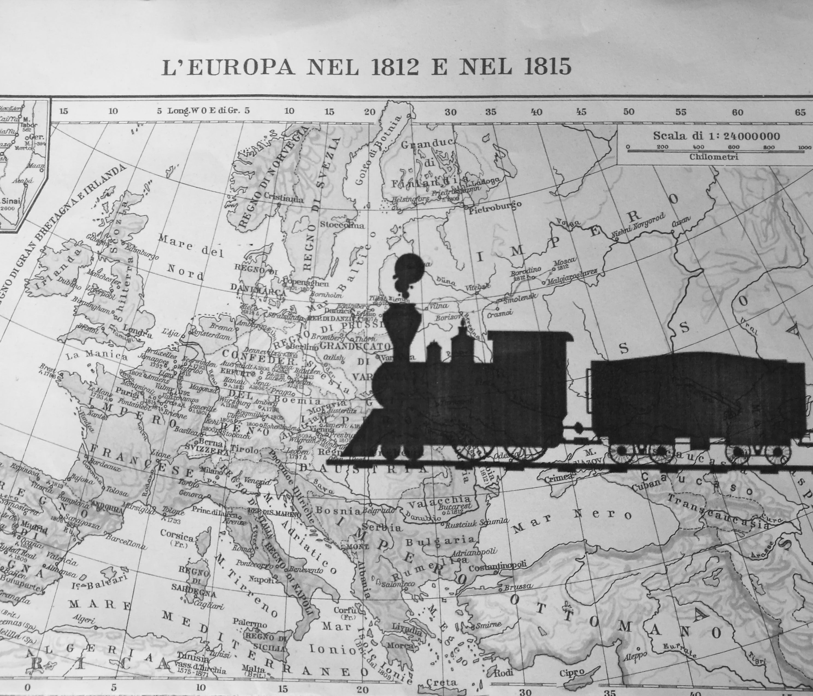

Trip
“Amo viaggiare” è forse una frase inflazionata. Lo è di meno la passione per lo storytelling dei viaggi.
Insieme a un collega, ma soprattutto amico, condivido la passione per i racconti di viaggio.
Nel 2019 abbiamo ripercorso parte della tratta del Simplon Orient Express, da Trieste a Istanbul in treno.
Il progetto che stiamo definendo è un ibrido tra guida e taccuino, con un focus dettagliato sulle condizioni metereologiche. Ripercorriamo il nostro viaggio tappa per tappa, fornendo informazioni utili e intrattenendo il lettore con le nostre disavventure.
Seguite meteotrip anche su facebook per aggiornamenti sulla data di pubblicazione.
Buona lettura!
